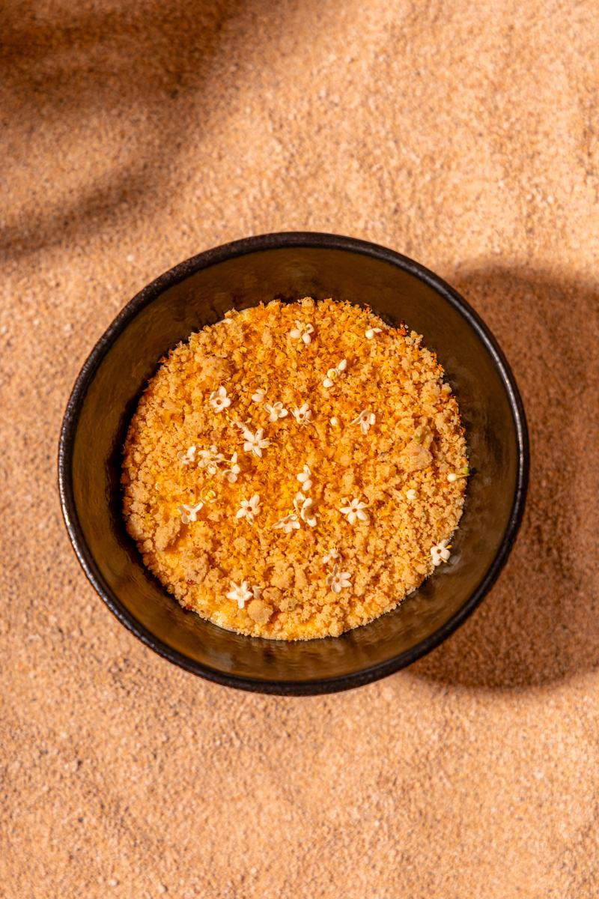

Ask three cooks how long plov takes and you will get three numbers, all of them wrong. The honest answer is that it takes as long as the fire needs, and the fire does not care about your service window.
What happens in those hours is not complicated, but it is unforgiving. Fat is rendered slowly. Onion goes dark, not brown. Meat is sealed and then left alone. Only when the broth tastes finished does the rice arrive — and from that moment nobody stirs anything, ever.
The rice comes last
Devzira rice is washed until the water runs clear, then laid on top of the zirvak without a single push of the spoon. It cooks in steam, not liquid. Break that rule and you have a very good rice porridge and a very disappointed room.
Спросите трёх поваров, сколько готовится плов, и получите три числа — все неверные. Честный ответ: столько, сколько нужно огню, а огню всё равно, когда у вас начинается сервис.
То, что происходит в эти часы, несложно, но не прощает ошибок. Жир вытапливается медленно. Лук уходит в тёмный, а не в коричневый. Мясо запечатывают и оставляют в покое. И только когда зирвак звучит готовым, приходит рис — и с этой минуты никто ничего не размешивает.
Рис — последним
Рис девзира промывают, пока вода не станет прозрачной, и укладывают поверх зирвака, не двинув ложкой. Он готовится на пару, а не в жидкости. Нарушьте правило — получите очень хорошую рисовую кашу и очень разочарованный зал.

Cutting by hand
Yellow carrot is cut into batons the thickness of a finger. A machine cuts them identically, which is exactly the problem: uniform carrot dissolves, and dissolved carrot makes the whole kazan sweet.
Резать руками
Жёлтую морковь режут брусками толщиной в палец. Машина нарежет их одинаково — и в этом вся беда: однородная морковь расходится, а разошедшаяся морковь делает весь казан сладким.
You are not cooking rice. You are cooking the steam above it.
Вы готовите не рис. Вы готовите пар над ним.
Maxim Fomenkov, head chefМаксим Фоменков, шеф-повар
Water, heat, patience
Three measures, in this order, and none of them written down in any kitchen we learned in:
- Water to one finger above the rice, never two.
- Full flame until it goes quiet, then coals only.
- Forty minutes closed. No looking.
Who is right
Samarkand layers it and serves it flat. Bukhara mixes it at the table. Fergana adds quince and refuses to discuss it further. All three are correct, which is the most Silk Road answer available.
We cook the Fergana version on weekdays and the Samarkand version on Sundays, because the argument is more interesting than the verdict.
Вода, жар, терпение
Три меры, именно в таком порядке, и ни одна из них не записана ни на одной кухне, где мы учились:
- Вода на один палец выше риса, никогда на два.
- Полный огонь, пока не станет тихо, дальше только угли.
- Сорок минут под крышкой. Не подглядывать.
Кто прав
Самарканд укладывает слоями и подаёт ровно. Бухара перемешивает у стола. Фергана добавляет айву и отказывается это обсуждать. Все трое правы — и это самый «шёлковый» ответ из возможных.
По будням мы готовим ферганский вариант, по воскресеньям — самаркандский, потому что спор интереснее вердикта.